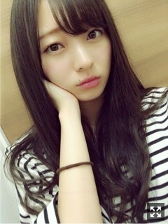
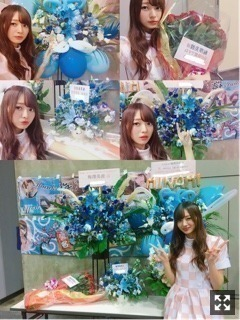
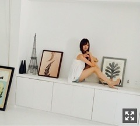
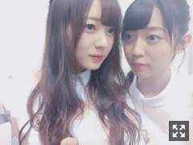

わんにゃん。梅澤美波
みなさまこんにちは！！
乃木坂46 ３期生の
梅澤美波です！！

すっかり落ちてしまった髪色を
戻しに行ってきました、黒に近い
落ちるといい色になります、お気に入り
(馬場ふみかさんに影響されてボーダー買った。\( ö )/とても好きなんです、、
このあいだ、いつ振りかってくらいに
足を解放してお出かけしました。
(ショートパンツをはいたという意味です
なんだろう、
年齢が落ち着いてきたからなのか
夏だから焼けないようになのか
丈が長いものを選ぶようになってしまったこの頃。たまにはいいですね◎
もうすぐ９月
今年も残すところあと３ヶ月だよ〜
はやいなあ
なんだろう、上半期って、
年明けの余韻がしばらく抜けないまま始まるから
あっという間に過ぎてしまうよね〜
濃く覚えてるのは下半期だったりする
より濃いものにしていきたいなあ
26日、スペシャルイベントありがとうございました！
初めてのスペイベ！！
たのしかた〜☺︎☺︎
ゲーム、お茶会、似顔絵会！
いつもの握手会とはまた違って
たくさん話せて特別でよきでした
似顔絵会、上手いと褒められたなあ（笑）
来てくださった方、ありがとう
また来てね〜
次は今週末もよろしくお願いします☺︎
あと、２７日握手会！
久しぶりの握手会だったの〜
全握、れのとペアでした、
高身長ツインタワー◎
(またグラビアしたい、２人でなにかしたい( .. )
久しぶりすぎて緊張したのと
皆様の名前と顔覚えてるかな〜
ってちょっと不安だったけど
案の定私の記憶力が発揮されまして
全然覚えてた、冴えてた◎
たくさんの方が遊びに来てくれて
ものすごい嬉しかったよ☺︎☺︎
素敵なお花も横断幕もたくさんありがとな〜

幸せはっぴ〜
最近ハマってる髪の毛、こればっかしてる
９月１０日の全握もぜひ遊びに来てね◎
ここ逃したら次の全握は１月まで空いちゃうよ( .. )
９月は個握も始まるし
握手会が定期的にあるから会えるね☺︎
私服久しぶりだからわくわく
あ、１８日のどこかの部で浴衣着ます〜
どこにしよかな( ¨̮ )
やっぱり握手会すき！
テンションあがって声高くなって
だんだん声でなくなって聞き取りずらいかもしれないけどごめんね、いつもありがとう
若様軍団について☺︎☺︎
ナイフ担当として加入しました！
私が加入した日も連絡を頂きました、
本当に素敵な方なんです、
きっと私が知ってる以上に
もっともっと若月さんのいい所
山ほどあると思うんです。
でも、３期生の私でも若月さんの良さがこんなに分かっているんだから、私は軍団員として、軍団長の良さを知ってもらえるように素敵な軍団員になります！
沢山いるはず
でも、そんな中でも軍団員に選んでいただいたからには
全力で活動したいと思います！
私も協力出来ることはしたい！
皆様、活動お楽しみに！☺︎

だいぶ遅くなってしまったけど
B.L.Tさんのオフショットです☺︎
夏っぽい衣装が物凄く可愛かったなあ
３期生の１歳の誕生日まであと数日
ですよ〜みなさま\( ö )/
長かったような早かったような。
もう２年くらい経ったような気もするし
それくらいここ１年で経験させていただいたことは
とても多くて大きくて
刺激を受ける毎日でした。☺︎
人生生きてきた中で
間違いなく１番濃い時間だった！
オーディションのときのことは
１ミリも忘れてない
鮮明に覚えてる！
また次回書きます〜
質問コーナー◎
Q.どの季節の変わり目の匂いが好き？
A.夏から秋！金木犀！
Q.匂いフェチとかありますか？
A.ある！匂いフェチ！すれ違った人がいいにおいだとついてきたくなる（笑）危ない（笑）自分は、香水はある程度同じものしか使わないようにしたいんだけどなかなか定まらなくて、シーンごとに匂い変えたりしちゃう( .. )ボディクリームとかはとくに好きで集めるの好き！
Q.緊張をほぐすためにしていることは？
女の子☺︎
Q.オススメのプチプラ化粧品は？
A.私、眉毛の形にはかなりこだわりがあるんだけど眉メイクに使っているものは全てプチプラ！KATEのパウダー、CANMAKEのペンシル、KATEの眉マスカラ！かなりよきメンツです◎
告知◎
▽８／３０ 月刊エンタメ さま
本日発売！先月に続き今月も載せていただいてます！与田桃表紙です！３期生全員載っています！ぜひチェックお願いします☺︎
▽９／１ ヤングガンガン さま
ソログラビア
▽９／４ 日経エンタテインメント さま
久しぶりの３期生全員☺︎色々語ったりもしました。皆様気づいた？発売日、３期生の１歳の誕生日☺︎記念すべき日の雑誌です、ぜひ！！
▽９／２４ Samurai ELO さま
美女散歩連載
よろしくお願い致します！
▽１０／６～１０／１５ 舞台『見殺し姫』
３期生で今年の秋、舞台をします。
どんな作品になるのか、
どんな舞台になるのか、
まだ想像もつきません！
アイアシアターです、
あそこに帰れるのは３度目、
何も同じ場所で、当たり前のことではないと思います。
今回の舞台は、全員に役があります
全員舞台に立てます
全員でお芝居ができます。
一人一人に役があることへの有り難みが
プリンシパルの経験からものすごく身に染みています。
プリンシパルから約半年、
同じ場所で、また舞台をするから
あの時と重ねてしまうこともあって
恐怖心というか、
今はまだちょっと怖いけど
やるのなら全力でって思っています
プリンシパルへは心残りがあって
最後の２日間４公演、出られなかったのはいままでで一番大きい出来事だったかな。
初めての舞台へ向けて自分なりに向き合って活動していた時の事だったから、かなり落ち込みました。
プリンシパルっていう舞台は
今でも握手会で
俺が行った時見れなかったんだ
ちょうど行った時みなみちゃん役やってるの見れたよ
って、感想を頂くことがあるくらい
お仕事の中でも大きいことでした。
だから、そのリベンジも込めて！
今まで先輩方の舞台を見られるチャンスがあれば、全部参加してきた、
それも、いつか自分がこんな風に堂々と演技がしたい！と思っていたからだと思います
見て、学びました。
プリンシパルのときに監督の徳尾さんから頂いた課題、どうしたらいいのかなって
出来るのかもわからない、でも、いつかあるかもしれない舞台のためにと思い、答えを探しました
みなさま、ぜひ！
１周年を迎えた３期生１２人の成長が
１番初めに感じられる場所だと思います！
プリンシパルの顔合わせが私の18歳の誕生日当日でした、だから、舞台とはなんだか縁を感じていました
18歳初めてのチャレンジが舞台
そして18歳２度目の舞台
全力で挑みます☺︎！
がんばるからパワーをちょうだい( .. )
申し込み開始しています、
頑張りを見にきてほしいなあ

なかよし◎たまみなみ
この間の全握のときね
桃子がいつもメイクしてもらってる
メイクさんがその時忙しかったらしく
そんな桃子は私のとこへやってきて
「ねえみなみん？リップ塗って〜」
って来たの( ¨̮ )（笑）
可愛くない？（笑）
私は桃子のメイクさんなのかな( ¨̮ )
プリンシパルのときとか
私がリップ塗ってると
絶対桃子が唇突き出してきて
「塗って〜」ってきてたの思い出した（笑）
そんな梅桃でした、平和です◎
１９枚目シングル、１０月１１日
発売決定致しました！
１８枚目シングル逃げ水での活動も
まだまだ始まったばかりの感覚、
本当に月日が経つのは早いなあと感じています、だからこそ大切に過ごさなければいけないんだなあ、と。
どのようになるかはまだ分からないけど
今はまだ１８枚目。
焦らず自分らしく最後まで頑張ります
セブンさんのロイヤルティーラテ氷が
美味しすぎて美味しすぎて
買い溜めしました（笑）（笑）
さっぱりしているティーの味、
練乳、ミルクアイス、氷、、
たまらねえ！！！！\( ö )/
みなさまもぜひ◎（笑）
ごめんね、見にくくて
そんじゃあまたなっ
おやすみ
夢で逢おうな〜（笑）
それぞれ人には色んな境遇があると思います
良い悪いは別として
それはどうしようもないものだと思います、巡り合わせだと思います、
そんなものを壊せたら素敵だなって思います
みんな、がんばろな〜
Original：https://www.nogizaka46.com/s/n46/diary/detail/40470?ima=0522&cd=MEMBER